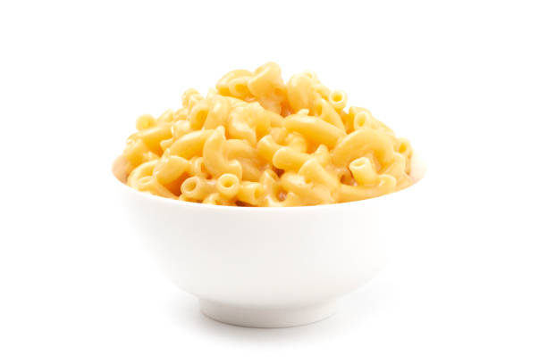

Mac n'Cheese

Description
This old school Mac n'Cheese recipe will have you begging for more with its unique addition of potato chip bread crumbs!
Ingredients
- 1 3/4 pounds whole-wheat macaroni
- 3/4 cup butter
- 3/4 cup all-purpose flour
- 6 cups milk, divided
- 1 tablespoon Worcesterchire sauce
- 1 teaspoon mustard powder
- 1 teeaspoon onion powder
- 1 teaspoon cayenne pepper
- salt and ground pepper to taste
- 1 (8 ounce) package shredded Cheddar cheese, divided
- 3 (8 ounce) packages shredded American cheese
- 1 (8 ounce) bag potato chips, crushed
- 1 cup shredded Cheddar cheese
- 1/3 cup grated Parmesan cheese
- butter-flavored cooking spray
- Preheat oven to 375 degrees F
- Boil a large pot of slightly salted water
- Cook macaroni in this water for 8 minutes whlie stirring occasionally
- Melt butter in a pot over medium-low heat
- Add flour to butter while whisking until brown for about 5 minutes
- Add 1 cup milk to flour while whisking for about 45 seconds, or until fully incorporated. Repeat twice
- Stir Worcestershire sauce, mustard powder, onion powder, and cayenne pepper into the mixture
- Season with salt and black pepper as needed
- Set heat to low, and cook sauce while whisking for about 10 minutes until it begins to thicken
- Add half the package of shredded Cheddar cheese and stir continually until the cheese melts completely. Repeat with remaining half of Cheddar cheese and American cheese, about 4 ounces at a time
- Once cheese is incorporated, remove the sauce from the heat
- Stir the drained macaroni into the cheese sauce to coat
- Divide the macaroni between two 9x13-inch baking dishes
- Mix the crushed potato chips, 1 cup shredded Cheddar cheese and Parmesan cheese into a bowl
- Top macaroni with the potato chip mixture, and spray the top of the macaroni with cooking spray
- Bake in the oven until the crust is brown and the sauce is bubbling, about 35-45 minutes